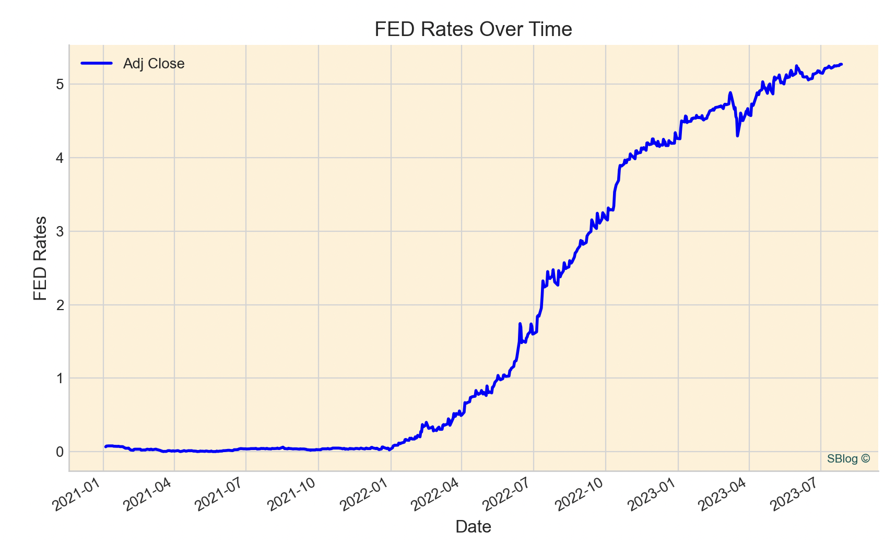
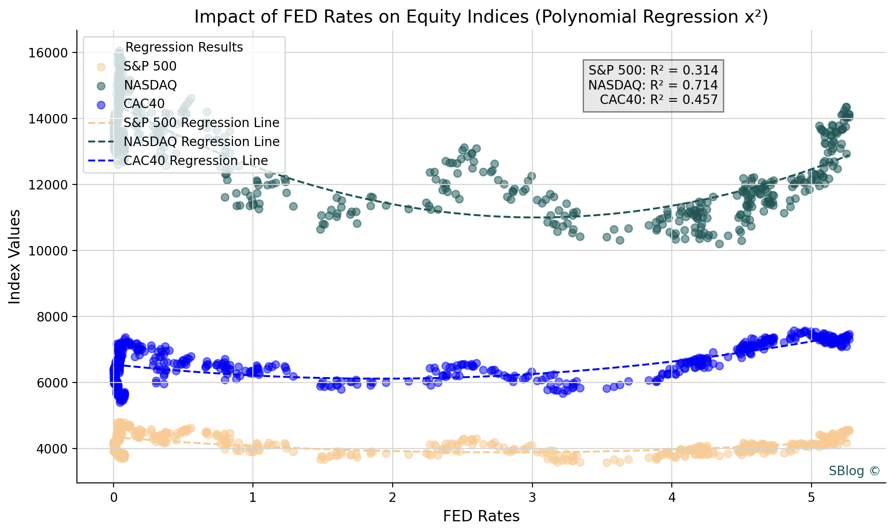
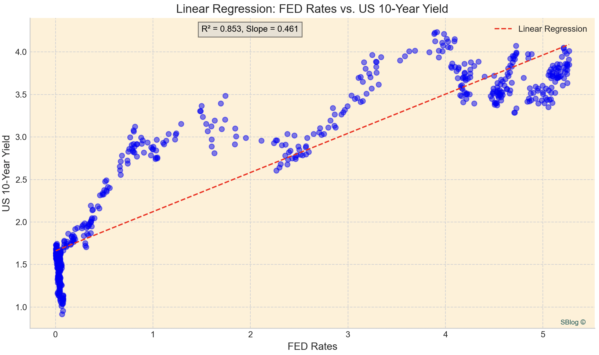

July 28, 2023
Policy Rates
The policy rate, or the central bank's target rate, plays a significant role in influencing equity and bond markets. Central banks use the policy rate as a tool to control monetary policy and achieve their economic objectives, such as controlling inflation, promoting economic growth, and maintaining price stability.
Source: Yahoo Finance, period from 01/01/2021 to 27/07/2023
Impact on Equities
- Cost of Borrowing: The policy rate directly influences the cost of borrowing for individuals, businesses, and financial institutions. When the policy rate is lowered, it becomes cheaper to borrow money, which can stimulate economic activity and boost corporate earnings. Lower borrowing costs may lead to increased investments by companies, resulting in potential growth in stock prices.
- Discount Rate for Valuations: Equity valuation models, such as the discounted cash flow (DCF) model, use a discount rate to determine the present value of future cash flows. The discount rate is often derived from the policy rate. When the policy rate is low, the discount rate used in equity valuations is also lower, making future earnings and cash flows more valuable in today's terms, which can positively impact stock prices.
- Inflation Expectations: Central banks use the policy rate to manage inflation expectations. If inflation is expected to rise above the central bank's target, they may increase the policy rate to reduce consumer spending and borrowing, which can help control inflation. Higher interest rates may lead investors to expect lower future corporate earnings, potentially leading to a decrease in equity prices.
- Investor Sentiment: Changes in the policy rate can influence investor sentiment and risk appetite. When interest rates are low, investors may seek higher returns in riskier assets like equities, driving demand for stocks and pushing their prices higher. Conversely, rising interest rates may lead investors to move away from equities and shift into safer assets like bonds, potentially causing a decline in equity markets.
- Currency Fluctuations: Changes in the policy rate can impact currency exchange rates. When a country's interest rates are higher relative to other countries, its currency tends to appreciate. A stronger domestic currency can affect multinational companies' earnings and may influence investor sentiment towards equity markets.
- Dividend Yield Comparison: Equity markets often compete with other asset classes, including bonds. When bond yields are low, investors may be more inclined to invest in equities to seek higher dividend yields. As the policy rate affects bond yields, changes in the policy rate can impact the relative attractiveness of equities compared to fixed-income investments.

Source: Yahoo Finance, period from 01/01/2021 to 27/07/2023
Impact on Bonds
- Yield on Existing Bonds: The most direct impact of a change in the policy rate is on the yield of existing bonds. When the central bank raises its policy rate, newly issued bonds are likely to offer higher coupon rates than older bonds, making the existing bonds with lower yields less attractive to investors. As a result, the prices of existing bonds may decline, leading to capital losses for bondholders.
- Yield Curve Shape: The policy rate influences the shape of the yield curve, which is a graphical representation of bond yields across different maturities. Higher policy rates result in upward-sloping (normal) curves, while lower rates create downward-sloping (inverted) curves.
- Bond Issuance: Changes in the policy rate can influence the cost of borrowing for governments and corporations. When the policy rate is low, the cost of borrowing decreases, leading to increased bond issuance by governments and corporations seeking to take advantage of lower interest rates. Conversely, higher policy rates may reduce bond issuance as borrowing costs rise.
- Investor Demand: Changes in the policy rate impact investor demand for bonds. When interest rates rise, newly issued bonds offer higher yields, which can attract investors seeking higher returns. On the other hand, falling interest rates may lead investors to seek existing bonds with higher coupon rates, increasing demand for those bonds.
- Currency Impact: Changes in the policy rate can also impact the exchange rate, which, in turn, affects foreign demand for a country's bonds. A higher policy rate can attract foreign investors looking for higher yields, leading to increased demand for bonds denominated in that country's currency.
- Credit Spreads: Policy rate changes can influence credit spreads, which represent the additional yield that investors demand for holding riskier bonds compared to government bonds. When the policy rate increases, credit spreads may widen as investors become more risk-averse.

Source: Yahoo Finance, period from 01/01/2021 to 27/07/2023
Generally, interest rates and the stock market have an inverse correlation. When interest rates rise, share prices fall. Bonds become more attractive.
Research & Analysis, Economic Research